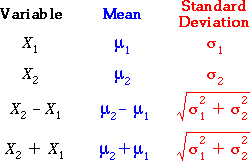
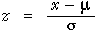
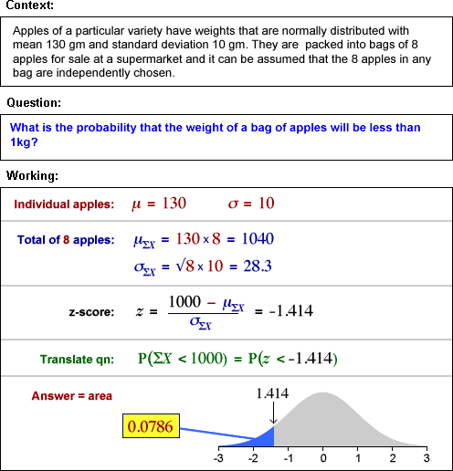
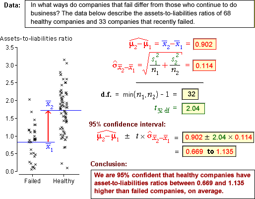
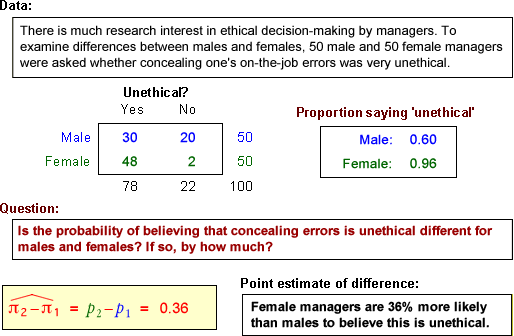
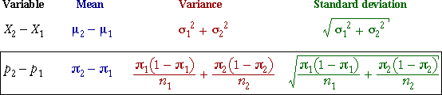
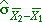
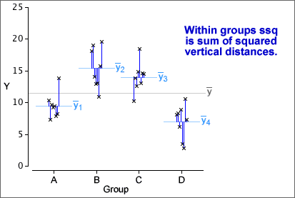

If you don't want to print now,
Data from two groups
When data are collected from two groups, we are usually interested in differences between the groups in general. The specific individuals are of less interest. Questions are therefore about the characteristics of the populations or processes that we assume underlie the data.
Example
The diagram below illustrates a possible model for the data above.

Without an understanding of the distribution of  ,
it is impossible to properly interpret what the sample difference, 9.5 pieces,
tells you about the difference between the underlying population means.
,
it is impossible to properly interpret what the sample difference, 9.5 pieces,
tells you about the difference between the underlying population means.
Sample mean and sum
The mean of a random
sample,  ,
has a distribution that is approximately normal if the sample size, n, is
large and alway has a
mean and standard deviation that depend on the population mean, µ, and standard deviation,
σ,
,
has a distribution that is approximately normal if the sample size, n, is
large and alway has a
mean and standard deviation that depend on the population mean, µ, and standard deviation,
σ,
 = μ
= μ
 =
= 
Occasionally the sum of values in a random sample values is more useful than the mean,
Its distribution is a scaled version of the distribution of the mean — the same shape but different mean and standard deviation.


Mean vs Sum
As the sample size increases,

Sum and difference of two variables
Applying the result about the sum of a random sample to a sample of size n = 2, X1 and X2,

If we generalise by allowing X1 and X2 to have different means, µ1 and µ2, but the same σ,

A similar result holds for the difference between X1 and X2:

If X1 and X2 are independent and have normal distributions, their sum and difference are also normally distributed.
General result
The results generalise further to independent variables that may have different means and standard deviations.

The formulae for the standard deviations are more easily remembered in terms of the variances of the quantities. For example,

Finding probabilities
To find the probability that a sum or difference satisfies an inequality, the inequality should be translated into ones about a z-score, using the mean and standard deviation of the quantity,

The standard normal distribution can then be used to find the probabilities. The examples below illustrate the method.
Example (total of several variables)

Example (sum of two variables with different sd)

Difference between means
The difference between any two independent quantities X1 and X2 has a distribution with

Applying this to the difference between the means of two random samples,

Irrespective of the distributions within the
two groups,

Estimation error
The difference between the sample means,  ,
is a point estimate of the difference between the means of the underlying populations, µ2 - µ1.
In order to properly interpret it, we must understand the distribution of
the estimation error.
,
is a point estimate of the difference between the means of the underlying populations, µ2 - µ1.
In order to properly interpret it, we must understand the distribution of
the estimation error.
Replacing σ12 and σ22 by s12 and s22 gives an approximate error distribution,

The standard deviation of these errors is the standard error of the estimator.
Examples

where the degrees of freedom for the t-value are
ν = min (n1−1, n2−1)
(A more complex formula is available that gives a higher value for ν. It is slightly better but the difference is usually negligible.)
Example

As with all other hypothesis tests, a p-value near zero gives evidence that the null hypothesis does not hold — evidence of a difference between the group means.
Example

Test statistic, p-value and conclusion
Consider a test for the hypotheses,
H0 : μ1 = μ2
HA : μ1 > μ2
The alternative hypothesis is only supported by very small values of  .
This also corresponds to small values of the test statistic t ,
so the p-value is the lower tail probability of the t distribution.
.
This also corresponds to small values of the test statistic t ,
so the p-value is the lower tail probability of the t distribution.
A small p-value is interpreted as giving evidence that H0 is false, in a similar way to all other kinds of hypothesis test.
Examples

Since our model involves only two parameters, π1 and π2, the two groups are the same only if π2 - π1 = 0. The value of π2 - π1 is usually unknown but can be estimated by p2 - p1. However p2 - p1 is a random quantity so its variability must be taken into account when interpreting its value.
Example

Applying the general results about the difference between two independent random quantities:

Since the individual proportions are approximately normal (in large samples), their difference is also approximately normal:

Standard error of p2 - p1
The standard deviation of p2 - p1 is also its standard error when it is used to estimate π2 - π1,

In practice, π1 and π2 must be replaced by their sample equivalents to estimate the standard error.

Confidence interval for difference
Most 95% confidence intervals are of the form
estimate ± 1.96 × se(estimate)
perhaps with a refinement of using a slightly higher value than 1.96 (e.g. a t-value) if the standard error is estimated. Applying this to our estimate of π2 - π1and using 2 instead of 1.96 gives the approximate 95% confidence interval

Example

The p-value is interpreted in the same way as for all previous tests. A p-value close to zero is unlikely when H0 is true, but is more likely when HA holds. Small p-values therefore provide evidence of a difference between the population probabilities.
One-tailed test
In a 1-tailed test, the alternative hypothesis is
HA : π1 − π2 > 0 or HA : π1 − π2 < 0
The test statistic is identical to that for a 2-tailed test and the p-value is obtained in a similar way, but it is found from only a single tail of the standard normal distribution.
Alternative test statistic
Since π1 and π2 are equal if H0 is true, the overall proportion of successes, p, can be used in the formula for the standard error of p2 - p1.

This refinement makes little difference in practice, so the examples below use the 'simpler' formula that we gave earlier.
Two-tailed example

This is compared to a t distribution with n - 1 degrees of freedom to find the p-value.
Example
The diagram below illustrates a 2-tailed test for equal means, based on n = 15 paired observations.

Estimating σ2
The sample standard deviation in any single group, si, is a valid estimate of σ, but we need to combine these g separate estimates in some way.
It is easier to describe estimation of σ2 rather than σ. If the sample sizes are the same in all groups, a pooled estimate of σ2 is the average of the group variances,

If the sample sizes are not equal in all groups, this is generalised by adding the numerators and denominators of the formulae for the g separate group variances,

More mathematically, yij denotes the j 'th of the ni values in group i , for i = 1 to g . The pooled estimate of σ2 can then be written as

The pooled variance is influenced most by the sample variances in the groups with biggest sample sizes.
Revisiting the difference between two group means
In an earlier section, we described confidence intervals and tests about the difference between two group means, µ2 - µ1. They can be improved if we can assume that
σ1 = σ2 = σ
Inference is still based on  ,
but the equation for its standard deviation can be simplified
,
but the equation for its standard deviation can be simplified
Confidence interval
A 95% confidence interval for µ2 - µ1 has the same general form as before,

but the standard deviation and the degrees of freedom for the t-value, ν, are different.
|  | degrees of freedom | |
| Allowing σ1 ≠ σ2 | min( n1 - 1, n2 - 1) | |
| Assuming σ1 = σ2 = σ | n1 + n2 - 2 |
If it can be assumed that σ1 = σ2, the confidence interval is usually narrower.
Example
The diagram below shows 95% confidence intervals obtained by the two methods.

The p-value for this test is found from the tail area of the t distribution with (n1 + n2 - 2) degrees of freedom.
Comparing several groups
A new approach is needed to compare the means of three or more groups — the methods for two groups cannot be extended. We again assume a normal model with equal standard deviations,
| Group i: | Y ~ normal (µi , σ) |
Testing whether there are differences between the groups involves the hypotheses,
H0 : µi = µj for
all i and j
HA: µi ≠ µj for
at least some i, j
Variation between and within groups
Testing whether the model means, {µi}, are equal is done by assessing the variation between the group means in the data. However, because of randomness in sample data, the means are unlikely be the same, even if H0 is true.
In the example on the left below, the group means vary so much that the {µi} are almost certainly not equal. However the group means on the right are relatively similar and their differences may simply be randomness.

The overall variance of all values (ignoring groups) is the total sum of squares divided by (n - 1).

Variation between groups is summarised by the differences between the group means and the overall mean. Note that the summation is over all observations in the data set.

This is also called the residual sum of squares since it describes variability that is unexplained by differences between the groups. Note that the pooled estimate of the common variance, σ2, is the sum of squares within groups divided by (n - g).

Sums of squares
| Sum of squares | Interpretation |
|---|---|
| Overall variability of Y, taking no account of the groups. | |
| Variability that cannot be explained by the model. | |
| Variability that is explained by the model. |
Coefficient of determination
The proportion of the total sum of squares that is explained by the model is called the coefficient of determination,

Example
The numerators in these ratios add up:
SSTotal = SSBetween + SSWithin
and the same relationship holds for their denominators (degrees of freedom):
dfTotal = dfBetween + dfWithin
F ratio and p-value
The test statistic is an F-ratio,

This test statistic compares between- and within-group variation. The further
apart the group means, the larger SSBetween and the larger the F-ratio.
Large values of F suggest that H0 does not hold — that the group means are not the same.
The p-value for the test is the probability of such a high F ratio if H0 is true (all group means are the same). It is based on a standard distribution called an F distribution and is interpreted in the same way as other p-values.
The closer the p-value to zero, the stronger the evidence that H0 does not hold.
Analysis of variance table
An analysis of variance table (anova table) describes some of the calculations above: